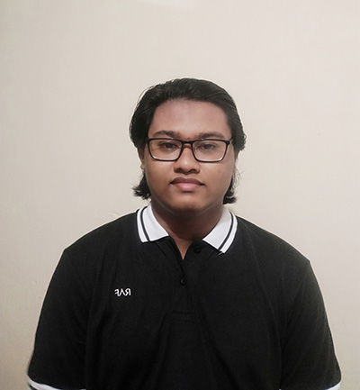

|  |
|
| Jenjang Pendidikan | Keterangan | Tahun |
|---|---|---|
| Sekolah Dasar | SD Muhammadiyah 3 Denpasar | 2007 - 2013 |
| Sekolah Menengah Pertama | SMP Negeri 2 Denpasar | 2013 - 2016 |
| Sekolah Menengah Atas | SMA Negeri 4 Denpasar | 2016 - 2019 |
| Perguruan Tinggi | S1: Teknik Informatika Institut Teknologi Sepuluh Nopember |
2019 - Sekarang |
| Tempat | Posisi | Tahun |
|---|---|---|
| CoFilm+ Indonesia | Web Developer | Agustus 2020 - Sekarang |
| Ed.versity | Backend Developer | Juni 2021 - sekarang |
| Dinas Pendidikan Provinsi Jawa Timur | Backend Developer Web PPDB SMA/SMK Jatim 2021 | April 2021 - Juli 2021 |
| Nomor HP | +6287861120178 |
| farhanarifandi@yahoo.com | |
| Farhan Arifandi | |
| Github | farfnd |